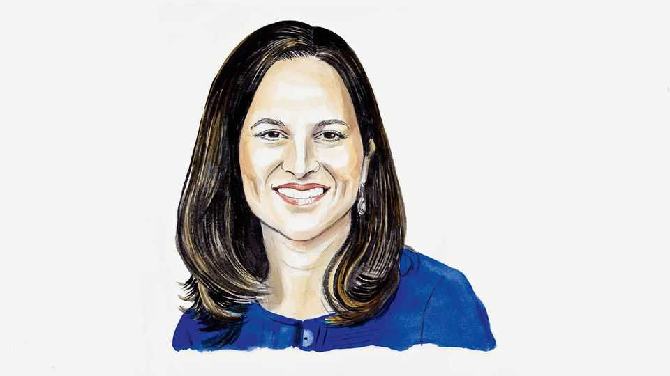

AI sceptics focus on the wrong threats
They overlook how vulnerable the status quo is and how much AI can help defenders, writes Anne Neuberger

Nov 12th 2026
MUCH OF THE debate about artificial intelligence, including a recent leader in The Economist, asks how to prevent a powerful new technology from making the world more dangerous. There is an equally important, more urgent question: how quickly can we use it to make an already dangerous world safer?
The world that large language models entered was very vulnerable. In 2017 NotPetya, a Russian cyber-attack aimed at Ukraine, spread worldwide within hours, deleting data and paralysing systems, including those of Maersk, which carries about a fifth of global shipping. In 2023 Iranian-linked hackers broke into American water utilities, forcing operators to switch to manual control. More worrying still are the attacks not yet triggered: Chinese state hackers have planted footholds in American power, water and transport systems, ready to strike silently during a conflict.
Few of these attacks relied on brilliant new exploits—code that weaponises systems’ flaws to cause harm. They succeeded because the defenders could not find, fix or fence off known weaknesses fast enough across sprawling, ageing systems. The cost of that status quo belongs in any honest accounting of AI risk.
I have worked on both sides of cyber-conflict: conducting intelligence operations at America’s National Security Agency, then running its Cybersecurity Directorate to turn those lessons into defences. Later, at the White House, I pushed through the first mandatory cyber-security rules for America’s pipelines, railways and airports. The experience taught me something important: AI can help defenders even more than it can help attackers.
True, AI makes the challenge harder in some ways. It lowers the skill needed by attackers, and lets them jiggle every digital door-knob, continuously and at scale. It is already speeding up the discovery of new flaws, including in software foundational to the internet. But the old rule of cyber-conflict, that defenders must be strong everywhere while attackers need to find only one weakness, rested on defenders lacking the time, people and money to cover everything. AI alleviates that problem.
AI is already making defenders’ response to these threats stronger. They own their code and can task AI to pre-emptively analyse it line by line from all possible angles of attack, rather than probing it only from the outside as attackers must do. They see their own network traffic, so AI can spot the subtle signs of an intruder using stolen credentials and legitimate tools, as China’s hackers do, which older tools miss.
Using AI available today, utilities can turn operational data into virtual replicas of power grids and water systems. These “digital twins” let operators test defences without putting essential services at risk. Attackers, working from outside, can build only crude approximations.
Crucially, AI can fix flaws after finding them. In DARPA’s AI Cyber Challenge last year, AI systems scanning open-source software of the kind that underpins critical infrastructure patched 43 planted vulnerabilities, and uncovered 18 previously unknown flaws, fixing 11 of them. For ageing equipment that cannot safely be patched, AI can give each flaw a specific workaround, such as a firewall rule or a settings change, tested on a digital twin before it goes live. And AI is cheap enough that small, under-staffed utilities can use it too.
None of this happens by default. AI favours defenders only if they move with urgency. Governments should start with the infrastructure operators and shared suppliers whose failure would cause the greatest disruption, enlisting AI labs to find flaws in their code or firmware and produce fixes by set deadlines. Governments should share the cost for smaller operators. Success should be measured by how quickly threats are contained and whether essential services survive an attack. Critical-infrastructure operators could address the highest-priority systems within a year, judging by how quickly they met the cyber-security standards issued by the Biden administration.
Findings should be shared with trusted partners using the co-ordinated-disclosure practices that keep fixes from tipping off attackers before systems are patched. The aim should be for a discovery in one country to strengthen every country running the same technology.
Such practical partnerships are more urgent than AI treaties, and the foundations exist. NATO’s annual Locked Shields exercise brings together thousands of participants from dozens of countries to defend power grids, water systems and other networks against live attacks. The exercises could be expanded to include using AI to generate patches and controls, sharing the results across the alliance.
Here, too, there is precedent. In 2021 America formed the International Counter Ransomware Initiative, now made up of nearly 70 countries. Members share threat warnings and forensic techniques, including how to trace ransoms laundered through the crypto ecosystem. They co-ordinate policy; for example, by pledging not to pay ransoms. Alongside law-enforcement takedowns of gangs and their money-laundering networks, the effort has squeezed the business: after peaking at over $1bn in 2023, ransom payments have fallen each year since.
The time has come to use AI as aggressively on defence as adversaries will use it in attack. A serious international agenda for AI safety should explain not only how it will contain the risks of a new technology, but how it will keep the lights on for the world’s citizens, and how soon. ■
Anne Neuberger is a general partner and the head of global affairs at Andreessen Horowitz. She previously served as Deputy National Security Adviser of the United States.